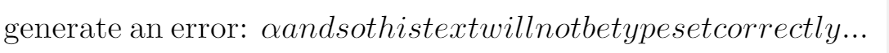
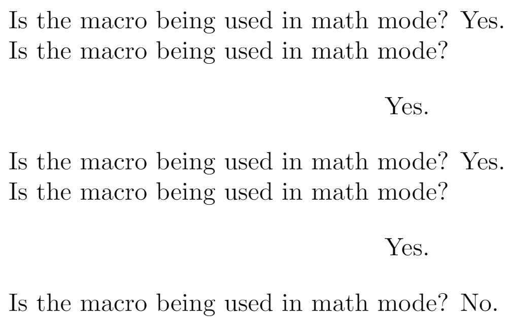

Missing $ inserted
How to fix this error
This error can be triggered in different ways and, especially for those new to LaTeX, it’s not always immediately obvious why it happened, or, more importantly, how to resolve it. We’ll start with an overview of the general conditions which trigger this error then list some of the more common causes and how to fix them. The latter parts of this article offer more in-depth material for readers wishing to broaden their understanding.
Note: In this article we use the terms “TeX”, “LaTeX” and “TeX engine” but if you aren’t sure of their different meanings you can find out in the Overleaf article What's in a Name: A Guide to the Many Flavours of TeX.
The main causes of Missing $ inserted
There are three main reasons why (La)TeX generates this error:
- You’ve made an explicit error in your math markup, such as writing
$y=f(x)$$—we look at other examples later in this article. - TeX has detected a character or command designed to be used only when TeX is typesetting mathematics but that character or command has been used when TeX was not typesetting mathematics.
- TeXnically speaking: TeX detected a character or command designed to work inside math mode but you’ve tried to use it outside math mode. To clarify the issue with “characters” designed to work in math mode, what we really mean is using characters assigned certain category codes designed to operate inside mathematical material.
- TeX has detected a command designed to be used only when TeX is not typesetting mathematics but that command was detected (used) whilst TeX was typesetting mathematical material.
Examples of errors and their solutions
The following examples demonstrate some ways in which the Missing $ inserted error can be triggered, together with providing solutions to resolve the error.
Symbol commands must be used in math mode
Many math symbols in LaTeX are accessed using commands which must only be used when TeX is typesetting math; i.e., at a time when TeX is in math mode.
Examples of commonly-used symbol commands include those for Greek letters: \alpha \((\alpha)\), \beta \((\beta)\), \gamma (\(\gamma)\), \delta \((\delta)\), \Delta \((\Delta)\) and so forth. Many other LaTeX commands, such as those for modifiers: \vec{x} \((\vec{x})\), \tilde{x} \((\tilde{x})\), \hat{x} \((\hat{x})\) etc., are also designed for use in math mode.
Using modifiers, symbol commands—and many other math-related commands—outside of typesetting mathematical content will generate a Missing $ inserted error and force the compiler to enter into math mode.
The following example shows what happens if you try to use the command \alpha \((\alpha)\) outside of math (mode):
Writing \verb|\alpha| outside math mode will generate an error: \alpha and so this text will not be typeset correctly...
Open this error-producing example in Overleaf
The following image shows part of the output produced by the LaTeX code above, demonstrating the error caused by using \alpha outside of math mode:

Fixing errors caused by LaTeX symbol commands
To use modifiers, or Greek math symbols, within sentences they must always be wrapped in single dollar signs $...$, or LaTeX’s \(...\) syntax, in order for TeX to process them in inline math mode, as shown below.
When writing the Greek letter alpha in a sentence, it must be written as \verb|$\alpha$| to generate $\alpha$, or as \verb|\(\alpha\)| which also generates \(\alpha\).
When writing a vector x in a sentence, it must be written as \verb|$\vec{x}$| to produce $\vec{x}$ or as \verb|\(\vec{x}\)| which also yields \(\vec{x}\).
A list of LaTeX symbols
The Overleaf article List of Greek letters and math symbols provides a list of symbols which are exclusive to math mode, together with links to further useful resources.
Using math-mode-only characters outside math mode
Traditionally, TeX/LaTeX reserve certain common characters for use within math mode:
^: reserved for creating superscripts_: reserved for creating subscripts$: reserved for starting/stopping math mode
Using them directly outside math mode triggers errors.
- To type
$outside math mode use\$ - To type
_outside math mode use\_ - Multiple ways to type
^outside math mode. A list is provided on tex.stackexchange
Using underscores outside of math mode
A common cause of the Missing $ inserted error is using underscores (_), a math mode character, outside of math mode—such as underscores present in filenames: an example of this is shown below.
Using a math character, such as an underscore, in a file name: math_example.tex.
Open this error-generating code on Overleaf
Because the underscore character is assigned category code 8 it is reserved for creating subscripts when the TeX engine is in math mode. Consequently, when (La)TeX detects the _ in the file name math_example.tex it does so outside of math mode, which triggers an error and results in erroneous typesetting of subsequent text:
\(\text{Using a math character, such as an underscore, in a file name: math}_example.tex.\)
The _ character (technically its category code of 8) triggers an error and causes TeX to enter math mode: the letter e following immediately after the _ is treated as a character to be typeset as a subscript. Processing then continues in math mode resulting in the italicized text and, additionally, there is no way here for TeX to gracefully exit math mode, which will trigger further errors.
In order to avoid this particular error, you must always use _ in math mode—i.e., inside $..$, $$...$$ or, preferably, inside LaTeX’s notation of \(...\) and \[...\].
Outside math mode you need to write \_ to use or typeset an underscore, as shown in the corrected version of the example:
To use the math-mode underscore character in a file name, write it like this: math\_example.tex.
Open this corrected version on Overleaf
Using underscores in URLs
You may also encounter this error when trying to typeset URLs with underscores, e.g. https://www.overleaf.com/learn/latex/Subscripts_and_superscripts. Instead of escaping each underscore character, you may want to load the url or hyperref package, and then use the \url command like this:
\documentclass{article}
\usepackage{url}
\begin{document}
\url{https://www.overleaf.com/learn/latex/Subscripts_and_superscripts}
\end{document}
Underscores in .bib file URLs
If such URLs are in your bibliography .bib file, causing errors to be reported from the .bbl file, then make sure you use the url or doi fields to record these fields in the .bib file:
doi = {10.1007/978-94-015-6859-3_4},
url = {https://abc.com/latest_news_1.html}
and load the url or hyperref package in your preamble, if necessary. Most bibliography style files will then be able to automatically wrap these values in a \url{...} command.
Using commands not permitted in math mode
A number of low-level built-in TeX commands (called primitives) are not permitted in math mode and their use in math mode will trigger the Missing $ inserted error. Although most users are unlikely to use these commands in day-to-day LaTeX code, we make a note here because it’s possible they could be contained within LaTeX commands (macros) being used in math mode.
The following example tries to use the TeX command \vskip inside mathematical material. This is not permitted and generates an error.
\documentclass{article}
\begin{document}
I want to add some space, but this is not the way to do it...
\[y=f(x) \vskip5pt z=f(y)\]
$y=f(x) \vskip5pt z=f(y)$
\end{document}
Open this error-generating code on Overleaf
Other TeX (primitive) commands not permitted when TeX is in math mode include \par, \hrule, \unvbox, \unvcopy and \valign.
Blank lines in mathematics
\documentclass{article}
\begin{document}
\begin{equation}
y=x^3,
z=x^3
\end{equation}
\end{document}
Open this error-generating code on Overleaf
Cause: The blank line between the formulae is converted to a \par command which is not allowed in math mode. You can also see this by writing
\documentclass{article}
\begin{document}
\[y=x^3,\par z=x^3\]
\end{document}
Open this error-generating code on Overleaf
To fix this, either delete the blank lines or comment them out:
\documentclass{article}
\begin{document}
\begin{equation}
y=x^3,
% This will suppress the blank line
z=x^3
\end{equation}
\end{document}
Open this corrected version on Overleaf
Using $ inside math environments
Some LaTeX environments, such as the align and equation environments, do not require math to be wrapped in $ signs, or use of LaTeX’s math syntax: \(...\) or \[...\]. The LaTeX code which implements those environments takes care of entering and exiting math mode.
The following example shows use of the $ sign inside an amsmath align environment, which triggers a Missing $ inserted error, among many others....
\documentclass{article}
\usepackage{amsmath}
\begin{document}
\begin{align*}
$2x - 5y &= 8 \\
3x + 9y &= -12$
\end{align*}
\end{document}
Open this error-generating code on Overleaf
The correct way to write these equations is:
\documentclass{article}
\usepackage{amsmath}
\begin{document}
\begin{align*}
2x - 5y &= 8 \\
3x + 9y &= -12
\end{align*}
\end{document}
Open this corrected version on Overleaf
Background to the Missing $ inserted error
The following section is for readers wishing to better understand the reasons behind the error Missing $ inserted. It’s not essential reading but it may assist you with finding and fixing errors.
There are no missing $ signs but I still get the error
In some circumstances the Missing $ inserted error can be very confusing because your LaTeX code might not actually have any problems with visibly missing $ characters. For example, the LaTeX fragment \(\verb|$$y=f(x)\par$$|\) superficially looks correct: the \(\verb|$$|\) pairs are balanced but it will trigger the “missing $” error. Here, it is due to the \par command which is not allowed in math mode:
\documentclass{article}
\begin{document}
This example generates the error \verb|Missing $ inserted|:
$$y=f(x)\par$$
\end{document}
Open this to see a Missing $ inserted error
The above LaTeX code actually triggers a cascade of errors, as shown below, so clearly you should not use \par inside math!
! Missing $ inserted.
<inserted text>
$
l.12 $$y=f(x)\par
$$
I’ve inserted a begin-math/end-math symbol since I think
you left one out. Proceed, with fingers crossed.
! Display math should end with $$.
<to be read again>
\par
l.12 $$y=f(x)\par
$$
The `$' that I just saw supposedly matches a previous `$$'.
So I shall assume that you typed `$$' both times.
! Missing $ inserted.
<inserted text>
$
l.13 \end{document}
I've inserted a begin-math/end-math symbol since I think
you left one out. Proceed, with fingers crossed.
! Display math should end with $$.
<to be read again>
\par
l.13 \end{document}
The `$' that I just saw supposedly matches a previous `$$'.
So I shall assume that you typed `$$' both times.
When the Missing $ inserted error occurs the TeX engine software is trying to recover and “get back on track” so it can continue processing after the point where the error occurred. The section Advanced: An explanation of TeX’s error recovery mechanism will help you understand why this cascade of errors arises due to TeX’s attempts at trying to fix the initial error.
Of modes, and when
Internally, TeX engines are designed operate using three “states of mind”, called modes, which depend on the type of material a TeX engine is currently typesetting. The mode a TeX engine is in at any point during typesetting is called its current mode, which changes throughout the process of typesetting the content of your LaTeX document.
For each of a TeX engine’s modes there are certain commands and characters (or, more correctly, category codes) which are “incompatible” with TeX’s current mode: they shouldn’t be used whilst TeX is in that specific mode. If you try to use those inappropriate characters or commands TeX will issue an error such as Missing $ inserted to tell you something is wrong.
Math mode
This error Missing $ inserted is related to TeX’s math mode—i.e., the mode a TeX engine is in when you ask LaTeX to typeset some maths.
Just for completeness we’ll note there are two types of math mode, reflecting the creation of inline or display math:
- inline math mode
- display math mode
TeX needs these two different math modes because it applies different rules for spacing, symbols sizes etc when typesetting math destined for inline or display.
Triggering TeX math modes
There are multiple ways to trigger a TeX engine to enter and then leave math mode.
- You can use explicit markup such as:
- LaTeX syntax:
\(...\)to enter\(then leave\)inline math mode or\[...\]to enter\[then leave\]display math mode; - (historic) TeX syntax:
$...$to enter (first$) then leave (second$) inline math mode or$$...$$to enter (first$$pair) then leave (second$$pair) display math mode;
- LaTeX syntax:
- or any one of the LaTeX math environments:
\begin{align}...\end{align}etc. Behind the scenes these environment take care of entering and leaving math mode.
The actual text of the message Missing $ inserted is built into (“hardcoded” in) TeX engine software, which is why you will still see Missing $ even if you are not using $ characters to typeset mathematics and use purely LaTeX syntax to markup the math in your document. This can be confusing to new users of LaTeX but there’s little that can be done to change this error message text without modifying the source code of TeX engines!
Macros: testing for math mode
It’s possible to test if TeX is currently in math mode using the primitive command \ifmmode; that way you can write macros whose behavior can adapt to avoid generating mode-related errors. Here is a very basic example to demonstrate the principle, which prints Yes. or No. depending whether or not TeX is in math mode at the point of “executing” the macro.
\documentclass{article}
\begin{document}
\newcommand{\mytest}{\ifmmode \mathrm{Yes}\else No\fi.}
Is the macro being used in math mode? $\mytest$
Is the macro being used in math mode? $$\mytest$$
Is the macro being used in math mode? \(\mytest\)
Is the macro being used in math mode? \[\mytest\]
Is the macro being used in math mode? \mytest
\end{document}
The following graphic shows the output produced by the example above:

Advanced: An explanation of TeX’s error recovery mechanism
The error message Missing $ inserted is not output by Overleaf, LaTeX, or LaTeX packages; it actually originates from within the executable program responsible for typesetting your LaTeX document: that executable program is called a TeX engine—you can think of it as “driving” the typesetting process.
Within the source code of the TeX software, its author (Donald Knuth), makes this observation about the code responsible for generating the Missing $ inserted error:
Here is a list of cases where the user has probably gotten into or out of math mode by mistake. TeX will insert a dollar sign and rescan the current token.
At the heart of the Missing $ inserted error is TeX detecting “something” that should not have been used inside math mode, or “something” expressly designed for math typesetting being used outside math mode.
The task facing TeX is: How do I recover from this? TeX does exactly what Knuth writes: it inserts a dollar sign and rescans the current token—a “token” is TeX’s internal numeric (integer) value which represents the character or command it has just read in. However, due to the precise context of the error, this strategy may, or may not, be successful—as the error text goes on to say “Proceed, with fingers crossed.”!
Worked example
Let’s explore Knuth’s comments by taking a closer look at the following example: \(\verb|$y=f(x)$$\vskip3pt|\). If you open the code below you’ll see it triggers the error Missing $ inserted.
Writing \verb|$y=f(x)$$\vskip3pt| produces...$y=f(x)$$\vskip3pt Start new line...
To review why this triggers an error let’s write subscripts to identify each \(\verb|$|\) in the expression to obtain \(\verb|$|_{\mathtt1}\verb|y=f(x)|\verb|$|_{\mathtt2}\verb|$|_{\mathtt3}\verb|\vskip3pt|\). TeX is able to correctly process the first part \(\verb|$|_{\mathtt1}\verb|y=f(x)|\verb|$|_{\mathtt2}\) which is treated as a correctly formatted piece of inline math, producing \(y=f(x)\). Immediately after processing \(\verb|$|_{\mathtt2}\) TeX temporarily exits inline math mode—in our example we are creating inline math in a paragraph so it briefly enters so-called horizontal mode.
It’s what happens next that triggers the error. TeX continues to process the \(\verb|$|_{\mathtt3}\) which triggers TeX to re-enter inline math mode. TeX now reads the next token which is the \(\verb|\vskip|\) command—it has not yet read the \(\verb|3pt|\). At this point, TeX sees \(\verb|\vskip|\) but it’s in inline math mode: \(\verb|\vskip|\) is not allowed there so it triggers TeX’s error-handling process as described by Knuth:
TeX will insert a dollar sign and rescan the current token.
Here, the current token is the \(\verb|\vskip|\) command so what TeX does is place a new $ into its input, let’s call it \(\verb|$|_{\mathtt4}\). At this point, TeX is still in inline math mode but now it goes back to read the equivalent of \(\verb|$|_{\mathtt4}\verb|\vskip|\) which is read in inline math mode. The \(\verb|$|_{\mathtt4}\), inserted by TeX itself, now closes the current inline math mode and TeX goes on to read the \(\verb|\vskip|\) command outside inline math mode—here, TeX is in a paragraph so the \(\verb|\vskip3pt|\) causes the current paragraph to be ended and \(\verb|3pt|\) of space placed after it.
Overleaf guides
- Creating a document in Overleaf
- Uploading a project
- Copying a project
- Creating a project from a template
- Using the Overleaf project menu
- Including images in Overleaf
- Exporting your work from Overleaf
- Working offline in Overleaf
- Using Track Changes in Overleaf
- Using bibliographies in Overleaf
- Sharing your work with others
- Using the History feature
- Debugging Compilation timeout errors
- How-to guides
- Guide to Overleaf’s premium features
LaTeX Basics
- Creating your first LaTeX document
- Choosing a LaTeX Compiler
- Paragraphs and new lines
- Bold, italics and underlining
- Lists
- Errors
Mathematics
- Mathematical expressions
- Subscripts and superscripts
- Brackets and Parentheses
- Matrices
- Fractions and Binomials
- Aligning equations
- Operators
- Spacing in math mode
- Integrals, sums and limits
- Display style in math mode
- List of Greek letters and math symbols
- Mathematical fonts
- Using the Symbol Palette in Overleaf
Figures and tables
- Inserting Images
- Tables
- Positioning Images and Tables
- Lists of Tables and Figures
- Drawing Diagrams Directly in LaTeX
- TikZ package
References and Citations
- Bibliography management with bibtex
- Bibliography management with natbib
- Bibliography management with biblatex
- Bibtex bibliography styles
- Natbib bibliography styles
- Natbib citation styles
- Biblatex bibliography styles
- Biblatex citation styles
Languages
- Multilingual typesetting on Overleaf using polyglossia and fontspec
- Multilingual typesetting on Overleaf using babel and fontspec
- International language support
- Quotations and quotation marks
- Arabic
- Chinese
- French
- German
- Greek
- Italian
- Japanese
- Korean
- Portuguese
- Russian
- Spanish
Document structure
- Sections and chapters
- Table of contents
- Cross referencing sections, equations and floats
- Indices
- Glossaries
- Nomenclatures
- Management in a large project
- Multi-file LaTeX projects
- Hyperlinks
Formatting
- Lengths in LaTeX
- Headers and footers
- Page numbering
- Paragraph formatting
- Line breaks and blank spaces
- Text alignment
- Page size and margins
- Single sided and double sided documents
- Multiple columns
- Counters
- Code listing
- Code Highlighting with minted
- Using colours in LaTeX
- Footnotes
- Margin notes
Fonts
Presentations
Commands
Field specific
- Theorems and proofs
- Chemistry formulae
- Feynman diagrams
- Molecular orbital diagrams
- Chess notation
- Knitting patterns
- CircuiTikz package
- Pgfplots package
- Typesetting exams in LaTeX
- Knitr
- Attribute Value Matrices
Class files
- Understanding packages and class files
- List of packages and class files
- Writing your own package
- Writing your own class